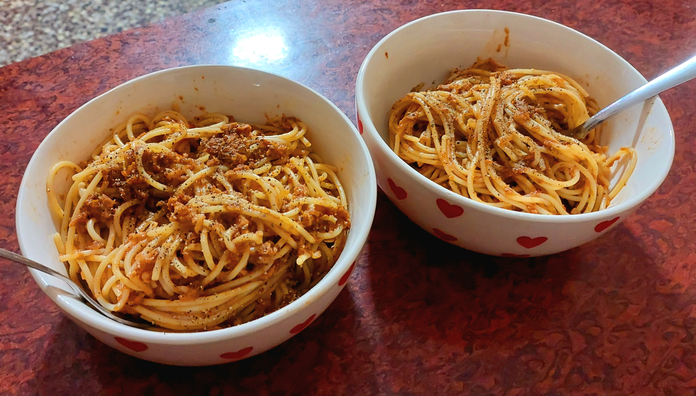

Syrian-Inspired Soya Meatball Spaghetti

- Prepared: 18 June 2026
- Cuisine: Syrian-Italian 🇸🇾🇮🇹
- Difficulty: 🔥🔥🔥🔥💧
- Servings: 2
🍜 Why I Made It
I wanted to try a different spaghetti dish than before and I though why not give a classic a chance. I wanted to do something different by using soya chunks as a meat substitute and see how well it works.
🛒 Ingredients
For the Soya Meatballs
- 80g dry soya chunks
- 1 small onion, finely grated
- 3 cloves garlic, minced
- 2 tbsp breadcrumbs
- 1 tbsp cornflour
- 1 tbsp soy sauce
- ½ tsp black pepper
- ½ tsp paprika
- ½ tsp dried oregano
- ¼ tsp cinnamon
- ½ tsp salt
- 1 tsp oyster sauce
- 1 tbsp olive oil
For the Tomato-based Sauce
- 2 tbsp olive oil
- 4 cloves garlic, finely chopped
- 1 medium onion, finely diced
- 400g blended tomatoes
- 1 tsp worcestershire sauce
- 1 tsp miso paste
- 1 tbsp tomato paste
- 1 tsp dried oregano
- 1 tsp dried basil
- ¼ tsp cinnamon
- ¼ tsp nutmeg
- ½ tsp paprika
- ½ tsp black pepper
- 1 tsp sugar or honey
- Salt to taste
- ½ cup water
Pasta
- 250g spaghetti
- Salt for pasta water
👨🍳 Method
-
Prepare the soya mince
- Add soya chunks to boiled water and cook for 8 minutes.
- Rinse under cold water and squeeze them aggressively.
- Get out as much water as possible.
- Pulse in a mixer until it resembles coarse minced meat.
-
Make the Meatballs
- Mix together minced soya, grated onion, garlic, breadcrumbs, cornflour, soy sauce, oyster sauce, olive oil, and spices thoroughly for 2–3 minutes.
- The mixture should hold together when squeezed.
- Adjust the consistency with 1 more tbsp breadcrumbs if too wet or 1 tsp water if too dry.
- Form around 12–14 meatballs and refrigerate 15–20 minutes.
-
Brown the Meatballs
- Adding 2 tbsp oil in a hot pan over medium heat, cook meatballs until browned on all sides.
- Remove and reserve.
-
Build the Sauce
- Cook onions until lightly golden in the same pan.
- Add garlic and cook for 30 seconds.
- Add tomato paste and cook for another minute.
- Simmer for 15 minutes after adding tomato puree, worcestershire sauce, miso paste, oregano, basil, cinnamon, nutmeg, paprika, sugar, pepper, salt, and water.
- Adjust the sauce with salt and sugar. It should become slightly think and rich.
-
Finish the Meatballs
Return the meatballs to the sauce and simmer for 10 minutes. -
Cook the Spaghetti
- Boil water and dissolve generous amounts of salt in it.
- Cook 250g of spaghetti until almost al dente.
- Reserve ½ cup pasta water before draining.
-
Combine
- Transfer spaghetti into the sauce
- Add a splash of pasta water and toss until glossy.
✅ What Went Well?
The cinnamon powder added a comfortable heat to the dish.
Soya chunks cannot replace meat, but the dish was still filling and
satisfying thanks to it.
🔧 What I'd Change Next Time
I would make the meatballs first and then keep then in the fridge for a
while so that the shape and texture can be set. I forgot doing that this
time and ended up having all the meatballs disintegrate while I mixed
the spaghetti.
It would also be a good idea to add grated Parmesan cheese.
I didn't brown the meatballs on all sides which maybe let openings be
there for them to fall apart. I'd fix that, too.
🤔 Would I Make It Again?
Honestly, maybe not. If I make it again, it'll be with mutton kheema and not soya chunks.